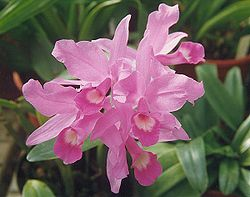

Costa Rica
Capital: San Jose
Simbolos Patrios
Bandera

Ave Nacional: Quetzal
Arbol Nacional: La Ceiba

Flor Nacional: Guaria morada
Historia:
Período colonial
En 1502, el navegante Cristóbal Colón, en su cuarto y último expedición al Nuevo Mundo, ancla en la ciudad de Limón, específicamente en Isla Uvita.
Los asentamientos europeos comienzan en 1522. Durante este período, los naturales del país son conquistados por los españoles. Costa Rica, a su vez, se convierte en la provincia meridional del territorio español, que ahora se llama la Nueva España. La capital de la provincia en este momento se encuentra en Cartago. En 1513 Vasco Núñez de Balboa descubre la costa del Pacífico. Más tarde el lago de Nicaragua es descubierto por Gil González Dávila, en torno a 1560. Este territorio sigue siendo explorado por Juan de Cavallón y Juan Vázquez de Coronado. Durante los siguientes trescientos años, España administra esta región, ya que los depósitos de oro son descubiertas por el capitán general del anuncio de Guatemala, un gobernador militar. Con optimismo, los españoles se refieren a la región como «Costa Rica» o «Costa Rica» para el oro valorado y depósitos minerales en el mismo. En última instancia, ya que estas tierras no son tan ricos, ya que se creía que primero ser, en comparación con otras provincias, los pobladores se dedican principalmente a la agricultura.
Independencia
Independencia
En 1821, Costa Rica unifica las provincias centroamericanas en la declaración de independencia de España, el día 15 de septiembre. Durante un breve período, 1823 – 1839, bajo el dominio del Imperio Mexicano de Agustín de Iturbide, Costa Rica era parte del estado en las Provincias Unidas de Centroamérica entre. En 1824 la capital del país se trasladó a San José, pero siguió un período de rivalidad con Cartago, la antigua capital.
Aunque todas las repúblicas recientemente independientes formaron una Federación, las fronteras regionales controversias generaron desacuerdos entre ellos, añadiendo a las regiones condiciones inestables. La norteña provincia de Guanacaste se anexó libremente a Costa Rica en 1824.
Hoy
Con una población aproximada de 5 millones de habitantes y un territorio de 51.100 kilómetros, Costa Rica se encuentra en Centroamérica, estratégicamente ubicado entre América del Norte y América del Sur.
Tiene dos puertos importantes, una en el Océano Pacífico y el otro del Atlántico; 6 horas de distancia entre ellos. Cuenta con un sistema constitucional integrado por tres poderes: Legislativo, Ejecutivo y Judicial. Debido a la enorme riqueza del país de la flora y la fauna y la conciencia ambiental de la población, el 25% del territorio nacional ha sido declarado como áreas protegidas.
Costa Rica TodayCosta costarricenses se refieren a menudo como «Ticos», y son saben principalmente por su respeto a la unión familiar, el uso continuo de las viejas costumbres y amabilidad en general y de la fraternidad.
Division Territorial
En el 2020, la organizacion territorial comprende de 7 provincias, 82 cantones y 486 distritos.
Provincias:
- San Jose
- Alajuela
- Cartago
- Heredia
- Guanacaste
- Puntarenas
- Limon